PHYSICSNETWORK é um projeto desenvolvido por um grupo de estudantes no qual tem como função demonstrar determinados assuntos estudados na disciplina de física. Possui uma metodologia de apredizado diferente, na qual é prôposto um determinado assunto e em seguida uma lista de exercícios para fixação do contéudo aprendido.
Criação de Conteúdo
- Tayan Nobre
Criação de Conteúdo
- Brenda Lima

Criação de Conteúdo
- Mirian Araújo
Criação de Questões
- Auricélia Gregório
Criação de Questões
- Ana Géssila
Criação de Questões
- Ismael Nascimento
Criação de Questões
- Matias Lima
Desenvolvimento Web
- Rafaelly Freitas
Desenvolvimento Web
- Keven Max
Desenvolvimento Web
- Leandro Lima
Desenvolvimento Web
- Bruno Lourenço
Designer/Artes
- Natã Lael
Homologação
- Andreza Nascimento
Homologação
- Gabriely Rodrigues
Documentação
-Werisson Ferreira
Documentação
- Daniel Siebra
Magnetismo está presente em muitas situações cotidianas,seja de forma explícita, como no caso de imãs de geladeira, no uso de bússulas, entre outras evidências como no funcionamento de aparelhos alto-falantes, televisão, telefone, etc...
Imãs
Na primeira situação o imã é aproximado registrando a presença de corrente elétrica na bobina, na segunda situação o imã é mantido em repouso não registrando corrente elétrica , na segunda o imã é afastado registrando corrente no sentido contrário.
Faraday concluiu que, quando a fonte de um campo magnético move-se em relação a um circuito fechado, uma corrente elétrica é estabelecida nesse circuito. Esse fenômeno , recebeu o nome de indução eletromagnética.
A Terra interage magneticamente com ímãs. Uma da hipóteses para o comportamento magnético da Terra é que ele ocorre por causa do movimento das cargas elétricas na parte líquida do núcleo do planeta.
A Terra apresenta dois polos magneticos, situados próximo aos polos geográficos, os quais são ilustraados no esquema ao lado. O polo norte magnetico da Terra localiza-se próximo ao polo sul geográfico, enquanto o polo sul magneticoda Terra fica próximo ao polo norte geográfico. Portanto, não se devem confundir os polos geográficos com os polos magneticos.

O campo magnético como uma propriedade do espaço ao redor de um ímã.
Assim como o campo elétrico, o magnético é um campo vetorial, no qual a cada ponto do espaço se associa um vetor indução magnética, cujo simbolo e B.
Representação de um campo magnético.
Um campo magnético consiste em mostrar as vârias indicações da agulha da bússola quando está é colocada em posições diferentes ao redor de um ímã.
O sentido do vetor campo magnético correspondem à orientação que a agulha da bússola teria ao ser colocada naquela posição. A essas linhas dá-se o nome de linhas de campo, linhas de força ou linhas de indução magnética. Quando mais intenso for o campo, maior deve ser a densidade de linhas.
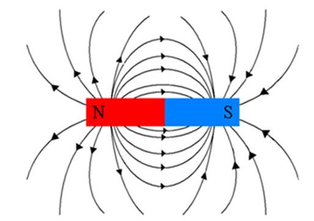Uma possibilidade de observar as linhas de campo é lançar limalhas de ferro ao redor de um ímã.
O princípio da superposição dos campos elétricos tambêm vale para o campo magnéticoAssim, se houver mais de um ímã em uma região do espaço, o campo magnético induzido por esses ímãs em um ponto qualquer é obtido por meio da soma vetorial dos campos gerados naquele ponto pelos dois ímãs separadamente.
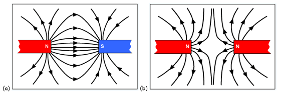Em algumas figuras e esquemas, quando a direção da corrente elétrica ou do vetor B e perpendicular ao plano do papel, recorre-se a simbolos especiais para representar seu sentido.
Intensidade do campo magnético de uma corrente em fio retilínio.
A demonstração dessa expressão não é objeto de estudo np Ensino Médio, poís envolve cálculos complexos. Nesta etapa, é importante saber que:
- "B" é a intensidade do vetor indução magnética, medida em tesla (T);
- "i" é a intensidade da corrente elétrica, medida em ampêre (A);
- "d" é a distância do centro do fio até o ponto onde se quer calcular a intensidade do vetor indução magnética, medida em metro (m);
- "u" é uma constante que depende do meio em que o fio se encontra. Essa constante que depende do meio em que o fio se encontra. Essa constante e denominada permeabilidade magnética
- Salvo especificação em contrário, esse será o valor adotado em todos os exemplos e exercícios daqui em diante.
O francês Dominique Arago demonstrou que um fio enrolado em um pedaço de ferro se torna um ímã quando percorrido por uma corrente elétrica. Inventou-se então, o eletroímã - ímãs temporários produzidos por corrente elétrica(esquema ao lado)
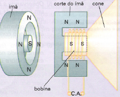
Os eletroímãs apresentam duas vantagens em relação aos ímãs naturais: a primeira é a possibilidade de poderem ser fabricados, ou seja, não seria necessário procurar ímãs na natureza; a segunda é que, ao contrário do ímã natural, ele pode ser ligado ou desligado, porque o efeito magnético do eletroímã dura somente enquanto houver corrente elétrica percorrendo o fio, tornando o eletroímã bastante versatil.
Há diversas aplicações tecnolóligicas para o eletroímã. Veja algumas delas:
-Alto-falante Um alto-falante é constituído basicamente, por um ímã fixo ou eletroímã e uma bobina atrelada a um cone de papelão chamado de diafragma. Em volta da bobina, há um imã(esquema abaixo)(obs:imagem). Ele converte a energia elétrica emenergia sonora.
- Transporte de sucata e separadores de metais
Em razão de sua capacidade de gerar campos magnéticos de grande intensidade, os eletroímãs podem ser destinados ao transporte de sucata, utilizados em depositos, ou na indústria do aço como separadores de objetos, removendo o ferro do restante do minério que não contêm esse elemento. Essa aplicação somente é possivel porque o eletroímã pode ser ligado e desligado. Para soltar o material capturado pelo dispositivo, desliga-se à corrente elétrica.
A experiência de Oented demonstrou que o campo magnético de um ímã pode atuar sobre cargas elétricas em movimento. Essa atuação se efetiva por meio da força magnética, a qual apresenta algumas características bastante peculiares. Veja algumas delas:
Características da força magnética:
Dependência do movimento da carga:
O arranjo experimental a seguir consiste em uma espira retangular suspensa, feita de fio condutor. Um dos lados da espira é colocado entre os polos de um ímã. Observe as duas situações mostradas a seguir.
De modo semelhante, experimentos com feixes de elétrons em tubos de raios catódicos mostraram que há uma força magnética agindo sobre eles na presença de campos magnéticos. A evidência mais forte da presença dessa força é o desvio na trajetória do feixe, conforme mostra o esquema a seguir.

Esses e outros experimentos mostraram que somente há forças magnéticas atuando sobre cargas elétricas que estejam em movimento. Esse fato explica por que somente aparecem forças magnéticas quando há correntes elétricas(caso da situação 3), e é particularmente importante porque mostra mais uma diferença fundamental entre o campo magnético e o elétric: o primeiro atua apenas sobre cargas elétricas em movimentos; o segundo atua sobre cargas elétricas em repouso ou em movimento.
A seguir, apresentamos três situações que envolvem carga elétrica em movimento submeda a um campo magnético.
Ainda por meio de experimentos, pode-se mostrar que quando há força magnética(caso da situação 7), ela é sempre perpendicular à velocidade da carga e ao campo magnético B->. As figuras a seguir mostram a direção é o sentido da força magnética para uma carga positiva e, depois, para uma carga negativa, em um plano a:
Dependência do movimento da carga:
O arranjo experimental a seguir consiste em uma espira retangular suspensa, feita de fio condutor. Um dos lados da espira é colocado entre os polos de um ímã. Observe as duas situações mostradas a seguir.
Intensidade do vetor força magnética
Por meio de experimetose depois de várias medições, os físicos concluíram que a força magnética depende: da intensidade da carga q - quanto maior a intensidade da carga, maior a força sobre ela; do môdulo da velocidade v-> - quanto maior for o môdulo da velocidade da carga, maior será o valor da força magnética; - do ângulo 0 entre v-> e B-> - mais especificamente, a intensidade da força magnética depende do senso desse ângulo. Em resumo, tem-se a seguinte equação:
O quadro a seguir mostra como essa expressão, formulada por Lorentz - ainda que de outra maneira - está de acordo com as observações experimentais.
- Se a carga está parada em relação a um refencial(r=0), não há força magnética.
- Se a carga estiver em movimento na mesma direção do campo magnéico(0 = 0° ou 0 = 180°), não há força magnética, pois sen 0° = sen 180°.
-Quando o ângulo 0 for 90°, a intensidade da força magnética atinge seu valor máximo, pois sen 90° = .
A seguir apresentadas três situações envolvendo uma carga elétrica em movimento em um campo magnético uniforme. A trjetória da carga depende do ângulo 0 entre sua velociadade v-> e o campo magnético B->.
*Situação 1: 0 = 0 ou 0 = 180°
Nesta situação, a velocidade e o campo magnéticp estão alinhados, ou seja, tém a mesma direção.
Como o modulo da força magnética é dado por Fa= q . B sen 0 e aen 0° = sen 180° = 0, então a força magnética será nula. Por essa razão, se não houver nenhuma outra força agindo, a particula portadora de carga elétrica realizará um movimento retilimio uniforme ao longo de uma linha de campo
*Situação 2: 0 = 90°
Nesta situação, a velocidade e o campo magnéticp são perpendiculares entre si como na figura 3.
Como o módulo da força magnética é dado por Fa = q . v . B . sen 0 e sen 90° - 1, então o modulo da força é dado por: Fa = q . v . B
Em situações em que a força é perpendicular à velocidade, não há alteração na intensidade da velocidade, mas há alteração em sua direção. Como a força magnética é sempre perpendicular à velocidade da particula, então a particula realizará um movimeto circular uniforme em um plano perpendicular às linhas de indução do campo magnéticp (figura 4).
Intensidade do vetor força magnética
Por meio de experimetose depois de várias medições, os físicos concluíram que a força magnética depende: da intensidade da carga q - quanto maior a intensidade da carga, maior a força sobre ela; do môdulo da velocidade v-> - quanto maior for o môdulo da velocidade da carga, maior será o valor da força magnética; - do ângulo 0 entre v-> e B-> - mais especificamente, a intensidade da força magnética depende do senso desse ângulo. Em resumo, tem-se a seguinte equação:
O quadro a seguir mostra como essa expressão, formulada por Lorentz - ainda que de outra maneira - está de acordo com as observações experimentais.
- Se a carga está parada em relação a um refencial(r=0), não há força magnética.
- Se a carga estiver em movimento na mesma direção do campo magnéico(0 = 0° ou 0 = 180°), não há força magnética, pois sen 0° = sen 180°.
-Quando o ângulo 0 for 90°, a intensidade da força magnética atinge seu valor máximo, pois sen 90° = .
O físico Michael Faraday(1791-1867) empregou longo tempo de sua vida na tentativa de descobrir se os campos magnéticos externos podem produzir correntesem fios. Em 1831, realizou um experimento eletromagnético. O arranjo era constituído por uma bateria, um fio e um amperímetro conectados da seguinte maneira:
Faraday observou que, todas as vezes que o circuito era aberto ou fechado no primeiro fio, o amperímetro registrava corrente elétrica no segundo fio. A corrente só era registrada no instante de abertura ou fechamento do circuito, e depois cessava.
Para verificar se esse fenômeno poderia ocorrer em outras situações, Faraday montou diferentes arranjos experimentais. Um deles era constituído por uma bobina, um imã em forma de barra e um amperímetro.
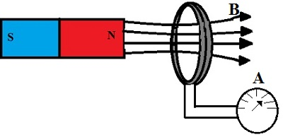Na primeira situação o imã é aproximado registrando a presença de corrente elétrica na bobina, na segunda situação o imã é mantido em repouso não registrando corrente elétrica , na segunda o imã é afastado registrando corrente no sentido contrário.
Faraday concluiu que, quando a fonte de um campo magnético move-se em relação a um circuito fechado, uma corrente elétrica é estabelecida nesse circuito. Esse fenômeno , recebeu o nome de indução eletromagnética.
O fluxo magnético mede o número de linhas de indução que atravessar a área A de uma espira imersa no campo magnético. QUanto maior for o número de linhas de campo que atravessa essa superfície, maior o fluxo magnético. Para calcular o campo magnético de um campo uniforme B basta que atravesse uma espira de esfera A por meio da expressão:
No SI (Sistema Internacional de Unidades) a unidade de fluxo denomina-se weber (Wb).
Após diversas experiências, Faraday percebeu que, para que surja a corrente induzida, é necessário haver uma variação do fluxo magnético em certo intervalo de tempo.
A corrente induzida ocorre devido á variação do fluxo magnético em um circulo fechado.
Como exemplo, quando um imã se aproximar de uma bobina, o campo magnético criado pelo imã dentro da bobina torna-se mais intenso conforme a aproximação, ocasionando o aumento do fluxo magnético.
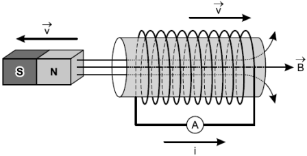Além de alterar o módulo do campo magnético, existem outras maneiras de fazer variar o fluxo magnético. Uma delas é alterar a área da superficie que o campo magnético atravessa. Como por exemplo, podemos considerar uma barra de cobre deslizando com velocidade "U" em um trilho metálico imerso em uma região na qual existe um campo magnético B. Conforme a barra se movimenta o fluxo magnético irá aumentar, ocasionando uma corrente induzida. Outra opção para a variação do fluxo é a alteração do ângulo formado entre a reta normal á superfície da espira e a direção do campo magnético. Se uma superfície apresentar sua reta normal com mesma direção e mesmo sentido que o campo magnético, o fluxo é máximo. Ao se inclinar a superfície, o ângulo alfa entre normal á superfície e o campo magnético diminui, ocasionando na diminuição do fluxo. Caso o ângulo entre a normal á superfície e o campo magńetico seja 90°, o fluxo será nulo.
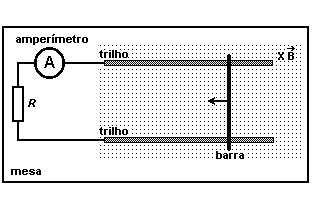Assim, a variação do fluxo magnético delta nulo em um intervalo de tempo delta "T" ocasiona uma corrente induzida. Para determinar o valor da força eletromatriz induzida associada á corrente induzida em um circuito, podemos aplicar a lei de Faraday.
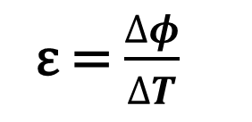Se houver mais de uma espira, a lei de Faraday poderá ser expressa assim:
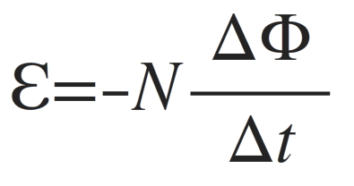Contudo, essa lei, ainda está incompleta. Falta-lhe o elemento responsável para mostrar o sentido. A lei de Lenz completa a Lei de Faraday.
A corrente elétrica recebida nas tomadas das residências é alternada, ou seja, o sentido da corrente se inverte com frequência definida. Neste tópico será abordado o princípio básicos dos dispositivos que geram esse tipo de corrente, convertendo ergia mecânica em energia elétrica.
Os esquemas abaixo mostram um modo de obter corretes alternadas. Neles, representamos um espira quadrada, conectada a um amperimetro, em uma região atravessa um amperimetro, em uma região atravessada por um campo magnético.

A espira pode realizar um movimento circular uniforme(MCU). Cabe salientar dois aspectos: O MCU ocorre apenas se houver a ação de um agente externo; O MCU induz um fluxo magnético variável. Na situação inicial, a espira está parado, fazendo um ângulo de 90°, logo o fluxo magnético é nulo(Esquema A). Quando a espira é girada (Esquema B) o fluxo magnético aumenta. Em um instante posterior (Esquema C), a espira fica com o seu plano perpendicular ás linhas de campo (Q = 0°), e o fluxo magnético que a atravessa tem valor máximo. Caso a espira continue girando nessa posição, o fluxo magnético diminui(Esquema D) tal variação do fluxo provoca uma corrente induzida no sentido oposto ao anterior. Por essa razão, a corrente induzida na espira tem sentido variável, e por isso é denominado corrente alternada.
A explicação para o sentido da corrente foi dada por Friedrich Lenz(1804-1864) e ficou conhecida como lei de Lenz, enunciada a seguir.
O sentido da corrente elétrica induzida é tal que o campo magnético por ela produzido sempre se opões a variação do campo magnético que a origina.
Matemáticamente, essa complementação á lei de Faraday é expressa colocando-se um sinal negativo antrs da variação do fluxo, de tal maneira que a expressa da lei de Faraday-Lenz para uma única espira é:

Quando uma corrente elétrica induzida surge por causa da movimentação de um campo elétrico, explicamos esse acontecimento por meio da força magnética. Concluimos que, mesmo se houver algum variação em fluxo magnética por um circuito fechado, surge resto circuito uma corrente induzida resumido.
Um campo magnético variável no tempo produz um campo elétrico(Induzido).
Como vimos, a variação de um campo magnético no tempo gera um campo elétrico. De maneira análoga um campo elétrico variável no tempo produz um campo magnético induzido. Um exemplo é o campo magnético induzido que surge na região entre as placas dos capacitores.
Um campo elétrico variável produz um campo magnético induzido.
Todas as leis descritas até aqui foram descobertas entre os séculos XVIII e XIX. Possivelmente o trabalho mais importante da época tenha sido publicado na segunda metade do século XVI: as chamadas leis de Maxwell. James Clerk Maxwell(1831-1879) reuniu uma síntese teórica de todas as descobertas até então.
Carga elétrica é fonte de campo elétrico.
Campo magnético que varia no tempo é fonte de campo elétrico.
Essa lei descreve principalmente a inseparabilidade dos polos magnéticos. Não existe monopolo magnético.
Corrente elétrica e campo elétrico variável no tempo são fontes de campo magnético.
- As equações de Maxwell e as ondas eletromagnéticas
Segundo Maxwell, um campo magnético variável produz um campo elétrico induzido, assim como um campo elétrico variável produz um campo elétrico induzido. Por esse raciocínio, podemos ter idéia de como as ondas eletromagnéticas são geradas. De acordo com a lei de Faraday, a variação de um campo magnético ocasiona o surgimento de um campo el´etrico. Esse campo elétrico induzido também é variável e, de acordo com a hipese de Maxwell, gera um campo magnético induzido, variável, interdependentes e se propagam em todas as direções. Quando aplicou suas equações a pertubações dessa natureza, Maxwell percebeu que elas incorporavam um caráter ondulatório, transportavam energia e estavam sujeitasaos fenômemos de reflexão, refração, difração e interferência, como quaisquer onda conhecidas. Por esse motivo, essas pertubações foram denominadas ondas eletromagnéticas.


Desde a elaboração das leis de Maxwell, por James C. Maxwell, até os dias atuais têm ocorrido grandes evoluções no ramo de estudo das ondas eletromagnéticas. Hoje já se tem conhecimento de vários tipos de ondas eletromagnéticas, mas todas elas pertencem à mesma natureza, ou seja, são constituídas de campos elétricos e campos magnéticos. O espectro eletromagnético é o intervalo completo da radiação eletromagnética que contém as ondas de rádio, as microondas, o infravermelho, os raios X, a radiação gama, os raios violeta e a luz visível ao olho humano.
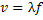De forma geral, os vários tipos de ondas eletromagnéticas diferem quanto ao comprimento de onda, fato esse que modifica o valor da freqüência, e também da forma com que elas são produzidas e captadas, ou seja, de qual fonte elas originam e quais instrumentos são utilizados para que se possa captá-las. No entanto, todas elas possuem a mesma velocidade, ou seja, v = 3,0 x 108m/s e podem ser originadas a partir da aceleração de cargas elétricas.
Onda de Rádio
São ondas de freqüência bem mais elevadas que as freqüências das ondas de rádio. Essas ondas possuem freqüências compreendidas entre 108 Hz e 1011 Hz. Hoje essas ondas são utilizadas amplamente na fabricação dos aparelhos de microondas como também nas telecomunicações, transportando sinais de TV via satélite ou transmissões telefônicas.
Onda de Rádio AM e FM
As ondas de rádio AM têm fraquências que vão de 530 Khz a 1600 Khz. Na transmissão de amplitude modulada, as pertubaçãoes geradas pela onda sonora original são convertidas em variaçãoes de amplitude que irão se reproduzir na amplitude da onda portadora.
As ondas de rádio FM têm frequência que variam de 88 MHz a 108 MHz. Na transmissão de frequência modulada, as informações contidas na roda sonora são convertidas em variações de frequência da onda portadora.
Onda de TV
As ondas eletromagnéticas de baixas freqüências, até cerca de 108 Hz, são denominadas de ondas de rádio. São denominadas dessa forma porque são utilizadas para fazer as transmissões das estações de rádio. Nas estações existem circuitos elétricos próprios que fazem com que os elétrons da antena emissora oscilem, emitindo as ondas de rádio que transportam mensagens.
Ondas de Celulares
AAs operadoras de telefonema celular utilizam antenas transmissoras espalhadas na área de cobertura. Cada uma dessas antenas, chamada de estação rádio base (ERB), é responsável por uma célula, ou seja, por uma área de transmissão – daí o nome “celular”.
Quando uma pessoa fala em um telefone celular, o aparelho emite ondas eletromagnéticas para celular mais próxima, que as transmite para a antena mais próxima da pessoa à qual a mensagem é destinada.
Microondas
São ondas de freqüência bem mais elevadas que as freqüências das ondas de rádio. Essas ondas possuem freqüências compreendidas entre 108 Hz e 1011 Hz. Hoje essas ondas são utilizadas amplamente na fabricação dos aparelhos de microondas como também nas telecomunicações, transportando sinais de TV via satélite ou transmissões telefônicas.
Ondas de infravermelho
Ondas eletromagnéticas na faixa do infravermelho (ou radiação infravermelho) tem frequência abaixo da luz vemelha, na faixa entre 300 GHz e 300 THz (1 THz = 10¹²), o que corresponde a comprimentos de onda de 1um a 1 mm. A intecidade da radiação infravermelha emitida por um corpocdepende de sua temperatura, pois essas ondas são geradas pela agitação térmica das partículas que compõe o corpo. Por esse motivo, as ondas de infravermelho às vezes são chamadas de ondas de calor.
Luz visível
No espectro da luz visível, constatamos que as frequências dessas ondas estão compreendidas entre 4,28 . 10 elevado a 14 Hz (Vermelho) e 7,5 . 10 elevado a 14 Hz (violeta), com comprimentos de onda variando de 700 nm (vermelho) a 400 nm (violeta). Assim como o espectro eletromagnético total, o espectro da luz visível é contínuo, ou seja, há ondas intermediárias entre os tipos de cores mais perceptíveis ao olho humano, as quais são difíceis de classificar conforme a cor.
Ultravioleta
As freqüências dessa radiação são superiores às da região visível ao olho humano. Essas radiações são emitidas pelos átomos quando excitados como, por exemplo, em lâmpadas de vapor mercúrio (Hg), acompanhando a emissão de luz. Por não serem visíveis os raios ultravioletas podem causar sérios danos à visão humana.
Raios X
Os raios raios X são ondas eletromagnéticas de frequências entre 10¹⁶ Hz e 10²⁰ Hz, aproximadamente, e comprimentos de onda de 300 mm a 0,001 nm.
Os raios X podem ser emitidos em um tubo de vácuo, onde um feixe de elétrons é acelerado contra um alvo feito de material metálico.
Aplicações dos Raios X
Os radiografia permite obter imagens dos osssos do corpo e também possibilita a visualização de outros órgão a partir da ingestão de um elemento químicamente controlado. O raio X também são empregados em análises químicas de compostos que contém alumínio e aço. Além das aplicações na medicina e na industria química, osraios X são usados na visualização de objetos no interior de recipientes opacos à luz visível.
Raios Gama
O s raios gama são ondas do espectro eletromagmético de maior frequência e, portanto, as mais energéticas. A frequencia da radiação gama é superior a 10¹⁹ Hz, e seu comprimento de onda é menor que 10-¹¹ m.

Embora não exista uma definição precisa de energia, podemos associá-la à capadicade derealizar trabalho, entendendo trabalho como uma ação ou movimento que modifica determinado sistema.
|
|
Todos os seres vivo utilizam a energia proveniente dos alimentos para a manutenção da vida e a execução de tarefas diárias. | 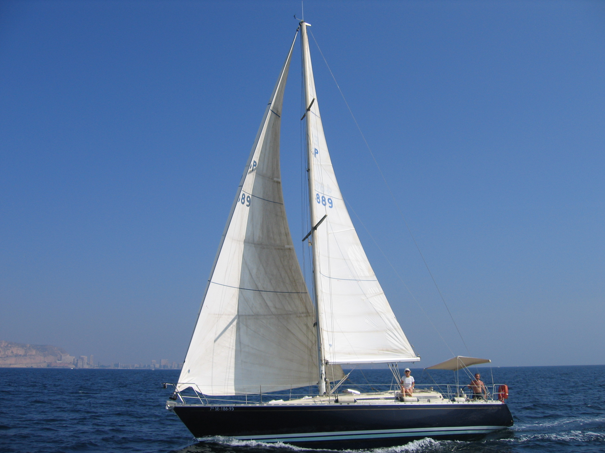 O vento que move um barco a vela resulta do aquecimento de regiões da atmosfera, causado pela energia proveniente do Sol. |
|---|---|---|
Quando o assunto é energia, o Sol desempenha papel central, grande arte da energia que move todas as coisas na Terra provém, diretamente ou indiretamente, dele.
Por
exemplo:
As mares, que são usadas para a
produção de energia elétrica, são geradas por vários fatores, entre
eles a influência gravitacional do Sol e da Lua sobre as águas
oceanicas.
Os biocombustíveis, que existem graças
à fotossíntes que as plantas realizam em presença da luz solar.
Os combustíveis fósseis, que têm sua
origem na matéria orgânica, que, direta ou indiretamente, dependeram
da fotossíntese e, portanto, do Sol.
Você Sabia?
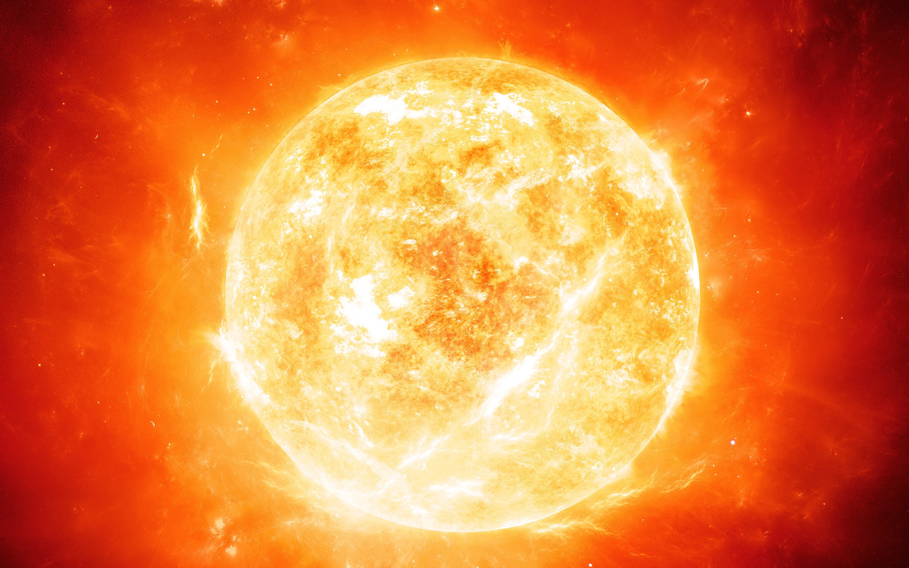No Sol, ocorre conversão de matéria em energia por meio de complexos processos de fusão nuclear. A energia emitida pelo Sol a cada minuto é equivalente à energia liberada pela queima de 8.10²° litros de gasolina.
A energia pode ser dividida em dois grupos: as renováveis e as não renováveis.
Energias Renováveis:
São aquelas que, como o próprio nome diz, se
renovam. Significa que elas não acabam, porque estarão sempre sendo
geradas de novo, de acordo com o ciclo da natureza no qual se
insere.
Exemplos:
Hidráulica
Biomassa
Biocombustíveis
Biogás
Energia Solar
Energia Eólica
Energia das marés e das ondas
Energias Não Renováveis:
São aquelas que com o uso ao longo do tempo se
esgotam. Isso porque, apesar de serem criadas pela natureza, demoram
muitos anos para se formar. Como nos últimos anos a humanidade tem
consumido a energia dessas fontes em altíssima velocidade e
quantidade, a natureza não tem o tempo necessário para repor o que foi
usado.
Exemplos:
Combustíveis Fósseis - Petróleo, carvão mineral e gás
natural
Matéria-Prima Nuclear - Urânio e Tório
O sucesso na
instalação e operação de uma usina hidrelétrica depende basicamente de
dois fatores:
Grande disponibilidade de água
(relacionada a um sitema climático caracterizado por chuvas
constantes)
Configuração de relevo que favoreça a
formação de grandes quedas de água.
O Brasil é um país que apresenta condições favoráveis à implantação de usinas hidrelétricas em praticamente todas as suas regiões, prova disso é que em 2010 cerca de 70% da energia produzida no país vinha delas.

A energia elétrica proveniente das hidrelétricas está relacionada à grande energia potencial gravitacional da água represada. As barragens formam estoques de água que atingem grandes alturas, proporcionando energia potencial gravitacional elevada.
Estrutura e
Função:
Dutos forçados: ou condutos forçados,
são tubulações que permitem o escoamento da água em queda acentuada,
de modo que sua grande energia potencial gravitacional se transforma
em energia cinética.
Barreira de comportas: tem como
finalidade o escoamento da água excedente rio abaixo, elas podem ser
reguladas, controlando a quantidade de água que permanece estocada na
barragem.
Vertedouro: seu papel é permitir que a
água execedente escoe de maneira mais suave até encontrar o leito do
rio, minimizando o impacto da sua queda direta, que poderia causar
erosão acentuada e deterioração do solo próximo á barragem. Os
vertedouros podem ter duas formas, a de degraus, onde são
contruidos como verdadeiras escadas gigantes e a de salto
"esqui", onde apresentão a forma de rampas com sua extremidade
final curvada para cima.
Esquema de
Funcionamento:
Os princípios físicos presentes no funcionamento das usinas hidrelétricas são os mesmos para todas elas, ainda que possa haver diferenças em seus projtos de construção. O esquema abaixo mostra os principais elementos.
A imagem abaixo apresenta um modelo de turbina e gerador de hidrelétrica:
Conduto forçado: a água entra e desce
por ele atingindo grande velocidade, e sua energia potencial
gravitacional é transformada em energia cinética.
Pás rotativas da turbina: após a queda,
a água encontra em seu caminho as pás da turbina. Essas pás estão
ligadas a um grande eixo central, que é posto para girar com a
passagem da água.
Conduto de desaguamento: Após colidir
com as pás e colocar a turbina em movimento, o conduto conduz a água
novamente.
Eixo central turbina-gerador: o eixo
está ligado ao gerador. Quando a turbina é acionada, o eixo gira e as
partes do gerador que constituem o dinamo também giram.
Rotor com imãs presos ao eixo: na outra
extremidade do eixo, encontra-se o roto, n qual estão presos grande
ímãs, que giram com o movimento do eixo central.
Estator: Em volta do rotor, localiza-se
o estator, onde se localizam grandes bobinas de fios metálicos. Com o
movimento dos ímãs, ocorre o fênomeno da indução eletromagnétic, de
modo que os elétrons presentes nos fios são postos em movimento,
gerandointensas correntes elétricas.
No interior do Sol, o elemento químico hidrogênio, encontrado em abundância, é submetido continuamente à fusão nuclear, sendo transformado em hélio e liberando imença quantidade de energia.
Estima-se que o Sol irradie uma potência da ordem de 390 sextilhões de watts(390.10²¹W), em todas as direções do espaço, mas apenas uma pequena parte dessa energia chega à Terra. A radiação solar que atinge as altas camadas da atmosfera, em direção perpendicular, tem intensidade de 1370 W/m². Uma parte dessa energia é refletida para o espaço, outra parte é absorvida, e a parte que finalmente chega à superfície, em regiões intertropicais, tem intencidade próxima de 1W/m². Como média diária anual, o valor aproximado é 200 W/m².
A
energia solar que chega à superfície é aproveitada diretamente pelo
ser humano de duas maneiras principais:
Aquecimento, por meio dos aquecedores
de água.
Geração de eletricidade.
Você Sabia?
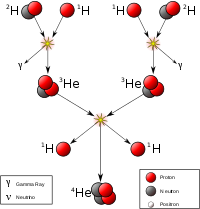A fusão nuclear consiste em colidir núcleos leves provocando a junção de dois núcleos e transformando-os em um novo núcleo, com número atômico maior. Nesse processo, é liberada energia em forma de radiação.
Usinas à base de energia
solar
As usinas solares não funcionam à noite, e seu rendimento é prejudicado em dias nublados os chuvosos. Além disso, a radiação solar varia conforme as estações climáticas do ano, de modo que nem todas as regiões do planeta apresentam condições favoráveis á implantação delas.
O
aproveitamento da energia solar na geração de eletricidade é feito por
dois processos:
Torres de concentração de luz
solar.
Plantas de painéis
fotovoltaicos.
| |
|---|---|
|
|
|
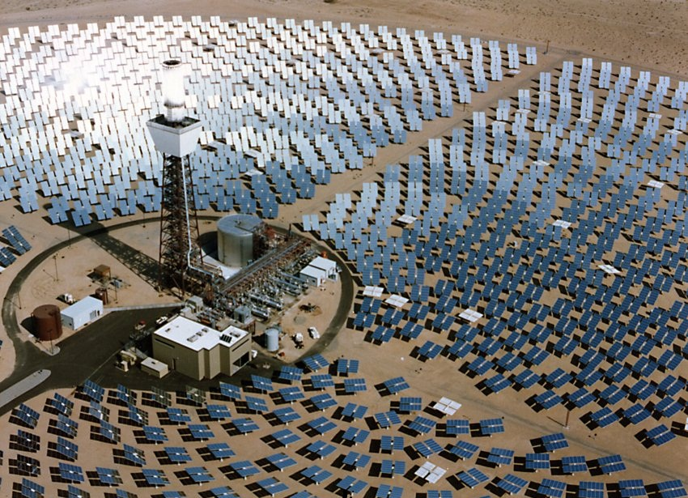
Esse tipo de usina utiliza arranjos de espelhos em formação circular ao redor de uma torre central, com isso, é possível aquecer a água a ponto de evaporá-la, e o vapor faz girar o eixo da turbina, após isso o restante do processo é idêntico ao das usinas hidrelétricas. |
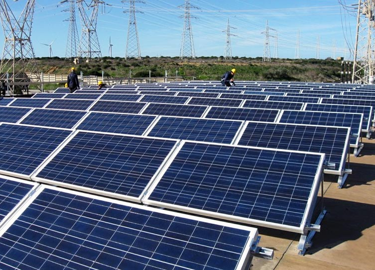
Esse tipo de usina utiliza painéis capazes de converter diretamente a energia solar em eletricidade por meio do efeito fotoelétrico. Porém, esse sistema apresenta baixo índice de conversão de energia solar em elétrica tendo como recorde de conversão pouco além de 30%. |
As usinas termelétricas produzem eletricidade por acionamento de geradores elétricos, onde é produzido vapor sob alta pressão para mover as pás das turbinas. Essas utilizam combustível, que, ao ser queimado, libera grande quantidade de calor, o qual aquece e vaporiza a água em uma caldeira então o vapor produzido aciona as turbinas. O restante do processo é similiar ao das hidrelétricas e das usinas de concentração solar. Após passar pela turbina, o vapor atravessa uma tubulação, onde é condensado, tornando-se líquido novamente então sendo direcionado por uma bomba até a caldeira, dando início a um novo ciclo.
Desse modo, essas usinas utilizam a energia presente inicialmente nos combustíveis, energia química, armazenada nas ligações entre os atómos que os compõem, e que é liberada no processo de combustão. Para potencializar o rendimento são usados combustíveris com alto poder calórico, capazes de liberar grande quantidade de energia térmica ao sofrerem combustão, em geral, são combustíveis fósseis.
Por serem compactas, essas usinas podem ser instaladas de maneira rápida e relativamente simples, em comparação ás usinas hidrelétricas e mesmo as solares.
A operação de uma termeçétrica, contudo, está sujeita á disponibilidade de combustíveis, a qual é ilimitada pelo alto custo, de produção e distribuição, considerando-se os fatos de não serem renováveis e de exigirem a instalação de oleodutos ou gasodutos. Associa-se a isso a desvantagem de ser poluente.
Impactos Ambientais das
Termelétricas
Devido à queima de combustíveis fósseis, as termelétricas emitem nuvens poluentes diretamente na atmosfera. Além de degradação das condições do ar respirável, os poluentes liberados contribuem para o aumento do efeito estufa e para a intensificação das chuvas ácidas, essas tendo várias outras consequências em particular.
A água fria utilizada no resfriamento dos sistemas da termelétrica provém de um rio, lago ou braço do mar nas proximidades da usina. Essa fonte recebe de volta água mais quente do que quando foi retirada, isso leva a alterações significativas nos ecossistemas locais, causando danos ao meio ambiente. O microclima do local também é afetado com a ligeira elevação da temperatura média do local em que a usina é instalada.
As usinas nucleares, também chamadas de centrais nucleares ou usinas nucleoelétricas, usam energia nuclear para a produção de eletricidade.
A liberação da energia térmica que aquece o líquido que gera vapor a alta pressão depende de um processo de ficção nuclear.
Você Sabia?
No processo de fissão nuclear, os nêutros são acelerados e incidem em um núcleo pesado. Com reação, o núcleo original se divide em núcleos menores, formando outros elementos químicos e liberando grande quantidade de energia.
As barras
de combustível, que podem ser de urânio ou plutônio, dentro do núcleo
do reator sofrem a fissão nuclear (A).
A energia liberada na
fissão é absorvida por um líquido, que é aquecido de forma rápida. Na
câmara geradora de vapor (B), a água é vaporizada e direcionada às
turbinas (C).
Por sua alta pressão, o vapor é capaz de mover pás
das turbinas, acionando o gerador (D) e produzindo eletricidade.
O núcleo do reator exige monitoramente constante, barras de atenuação são inseridas para absorver os nêutrons livres e, assim, controlar a reação nuclear.
Sem esse controle, ocorreria um aquecimento enorme, o que poderia levar à explosão e ao rompimento das paredes do núcleo. A alta sotisficação tecnológica envolvida na construção e operação segura desse tipo de usina tem impacto direto no seu custo final, o que a torna uma das formas mais caras de geração de eletricidade.
Energia Nuclear pelo
Mundo
Fonte energética nuclear é responsável por muita polêmica e desconfiança: a falta de segurança, a destinação do lixo atômico, além da possibilidade de acontecerem acidentes nas usinas, geram a reprovação da utilização da energia nuclear por grande parte da população.
Alguns acidentes em usinas nucleares já aconteceram, entre eles estão:
Three Miles Island – em 1979, na usina localizada na Pensilvânia (EUA), ocorreu a fusão do núcleo do reator e a liberação de elevados índices de radioatividade que atingiram regiões vizinhas.
Chernobyl – em 1986 ocorreram o incêndio e o vazamento de radiação na usina ucraniana, na extinta União Soviética, com milhares de feridos e mortos, podendo a contaminação radioativa ter causado 1 milhão de casos de câncer nos 20 anos seguintes.
A energia nuclear mesmo com vários ponto negativos apresenta vários aspectos positivos, sendo de fundamental importância em países que não possuem recursos naturais para a obtenção de energia.
A tabela abaixo mostra os principais países que utilizam essa modalidade de produção eletrica.
|
76,2% |
48% |
32,7% |
26,9% |
23% |
|---|---|---|---|---|
|
19,9% |
18,6% |
16,5% |
2,7%* |
13,5% |
A produção de energia eólica se dá quando as correntes de ar de alta velocidade movem as grandes pás do aerogerador, que inicia um movimento de rotação do cubo do rotor, que aciona o eixo principal e este aciona um eixo secundário que amplifica o movimento rotativo, um gerador é então acionado, produzindo eletricidade por meio de indução eletromagnética.
A eletricidade produzida é coletada por cabos e levada a uma central de transformadores, que depois a direcionam aos centros consumidores.
A geração de energia eólica em larga escala apresenta algumas dificuldades, porque necessita, além de ventos fortes e constantes no local, a instalação de vários e enorme cata-ventos.
O uso de energia eólica é considerado uma das formas mais limpas de obtenção de energia elétrica, pois não implica emissão de poluentes no solos, na atmosfera ou na água. No entanto, os grandes conjuntos de cata-ventos geram poluição sona significativa.
Há também estudos afirmando que as pás dos cata-ventos podem, em determinadas localidades, inferferir na rota migratória de bandos de aves.
Você Sabia?
|
23,7% |
17,9% |
|---|---|
|
16,1% |
8,4% |
|
6,3%* |
0,3% |
As usinas de produção de eletricidade normalmente se localizam longe dos centros consumidores.
O transporte de eletricidade envolve várias etapas e um número elevado de equipamentos para garantir que a energia chegue aos pontos de consumo com qualidade e segurança.
A tensão elétrica gerada nas centrais é, em geral, alternada, e estabelecida em 600 V. A subestação de transmissão eleva essa tensão a ate 500 000 V, e a eletricidade é então transportada pelas linhas de alta tensão.
Na subestações de energia, via de regra localizadas no próximo aos centros urbanos, a tensão elétrica é diminuída para 13 800 V e distribuída pelas linhas de média tensão urbanas.
Ao chegar aos locais de consumo, transformadores reduzem a tensão elétrica para 110 V ou 220 V. Cabos de baixa tensão levam a eletricidade até as caixas de entrada de residências, estabelecimentos comerciais e industrias, e de lá fios a distribuem para os pontos finais de consumo, onde a energia elétrica será finalmente utilizada. Os chamados relógios de energia medem o consumo de energia elétrica de cada ponto consumidor e coletam informações que serão apresentadas na fatura de consumo.
A eletricidade chega ás residências por meio de cabos em baixa tensão que estão ligados ás linhas de distribuição das ruas.
Como já mencionado, a tensão da rede primária (cerca de 13,8 kV) é reduzida para 110 V ou 220 V nos transformadores que se encontram nos postes das ruas. Essas tensões, muito menores, garantem a redução de riscos para os usuários finais, em caso de contato direto com a rede elétrica.
Em uma instalação típica, três fios partem do transformador externo localizado nos postes para uma residência: duas fases e um neutro. As fases apresentam tensão alternada que oscila geralmente entre -110 V e + 100 V e o neutro tem potencial elétrico zero.
Esses cabos são ligados á caixa de entrada, onde há o medidor de consumo de energia elétrica (“relógio”) , responsável por registrar o consumo mensal da residência, para que a empresa fornecedora de energia possa gerar a fatura de cobrança.
O medidor elétrico pode se localizar na mesma caixa em que se encontram a chave geral, os fusíveis ou disjuntores e as chaves auxiliares secundárias. Dependendo da instalação, no entanto, o medidor pode se localizar em uma caixa externa, para facilitar o acesso do profissional responsável pela leitura do relógio. Nesse caso, os outros equipamentos (chave geral, chaves secundárias e elementos de proteção) normalmente se localizam em uma caixa secundaria, dentro da residência.
A chave geral controla todo o fornecimento de energia elétrica que chega do exterior para a casa. Se estiver desligada, não haverá eletricidade circulando pela residência. Os fusíveis ou disjuntores são elementos de proteção contra sobrecargas na rede elétrica. Eles são fabricados de modo que fundam (fusível) ou desarmem (disjuntores), quando circular por eles uma corrente elétrica perigosa para a instalação elétrica. Assim, evitam que os demais componentes da rede residencial, incluindo os aparelhos ligados a ela, sofrem algum dano.
Os astros celestes como: Lua, planeta, estrelas, etc. São muito maiores que objetos cotidianos, e as distâncias cósmicas também são astrônomicas, literalmente.
Para medir distâncias muito grandes, como as astronômicas adotamos ano-luz como unidade de medida.
Um ano-luz corresponde a 9x1015 m.
A distância do sol em relação à Terra, é de cerca de 1,5x108 ou 150 000 000 km. A estrela mais próxima das Terra depois do Sol é a Próxima Centauri; mesmo assim ainda está a 4x1013 km ou 4,2 anos luz.
Na Via Láctea estão presentes todas as estrelas vistas a olho nu, e também a Terra. Acredita-se que o universo contenha cerca 50 bilhões de galáxias, agrupadas em aglomerados e superaglomerados de galáxias.
As estrelas são imensas esferas de plasma (gás altamente ionizado) com temperaturas altas o suficiente para que ocorra reações de fusão nuclear em seu centro, que são a fonte de energia do seu brilho.
As estrelas são compostas, basicamente, por 90% de hidrogênio e de 5% a 10% de hélio.
A evolução das estrelas é determinada por sua composição química e sua massa que é a propriedade mais marcante. Em 1901, Annie Jump Cannon, classificou as estrelas em 7 tipos (O, B, A, F, G, K, M), de acordo com as linhas espectrais (está diretamente relacionada com a massa das estrelas) observadas na luz por elas emitidas.
Nessa classificação as estrelas gigantes passaram a ser do tipo O, enquanto as menores foram classificadas como tipo M. Nosso sol está classificado como estrela G.
Em 1938, Hans Bethe, sugeriu que a energia das estrelas provém das reações termonucleares que ocorrem no núcleo estrelar. As reações consistem na conversão de 4 núcleos de hidrogênio (H) em 1 núcleo de hélio (He).
A temperatura mínima para que as reações termonucleares ocorram é da ordem de dezenas de milhões de Kelvin.
Pressão Térmica: resultado da agitação das moléculas, no restante da massa das estrelas.
Pressão Radioativa: radiações emitidas no processo que exerce pressão restante da massa da estrela.
A soma das duas pressões é suficiente para vencer a pressão gravitacional.
Com as contrações que impulsionam o aumento da pressão, o plasma volta a se aquecer. E,m uma camada acima do núcleo estrelar, o aquecimento pode levar a conversão dos núcleos de hidrogênio em hélio, nesse estágio a estrela é chamada de Gigante Vermelha.
Você Sabia?
Astrônomos de todo o mundo calculam que em aproximadamente 5 bilhões de anos o Sol vai se tornar uma Gigante Vermelha, engolindo vários planetas.
Destino das estrelas: pode ocorrer de duas formas.
Primeira forma: quando o hélio acaba, em estrelas pouco massivas, a fornalha nuclear não mais se acenderá, por conta da ação gravitacional a estrela se contrai. Nesse processo de contração, a densidade estrelar torna-se altíssima,tem-se então uma anã branca.
Segunda forma: nas estrelas massivas, o processo se reinica com o núcleo se contraindo, nessa fase como os elementos são fundidos em camadas, a estrela se assemelha a uma cebola, tem-se então, as estrelas gigantes.
Estágios finais das estrelas
Ela pode ser simples e isolada ou fazer parte do sistema com múltiplas estrelas.
Massa inicial, refere-se a massa inicial do nascimento da estrela.
Supernovas, pulsares e buracos negros
No caso de estrelas massivas, quando a contração do núcleo cessa de forma abrupta, as camadas de gás do restante da estrela são impulsionadas para o meio que gera uma grande explosão. Por associação ao surgimento de uma nova estrela dá-se o nome de Supernova
Pulsares, são os cones de radiação formados nos polos dos campos magnéticos.
Estrela de Neutrons: núcleos supercompactados, apresentam campos magnéticos extramente intensos nos polos, onde são formados os pulsares.
Buraco Negro: quando toda a massa da estrela fica concentrada em um ponto com atração gravitaacional de tal intensidade, que nem a luz consegue escapar dele. Sendo atraída gravitacionalmente para dentro do buraco.
De modo geral, focaliza muitos conceitos de espaço e tempo. Antes de Newton, tivemos o princípio da " relatividde de Galileu ". As leis dos movimentos são as mesmas em todos os referenciais que se movem, de maneira uniforme entre si.
Depois veio James Clerk Maxwell, que desenvolveu a teoria do eletromagnetismo. "Fênomenos eletromagnéticos se propagam com velociade finita". Logo após temos Hendrik Lorentz, com suas transformações, que aborda bastante a contração do espaço e a dilatação do tempo.
Para finalizarmos, surge Albert Einstein com a teoria da relatividade de especial e o princípio da relatividade. "As leis da física são as mesmas em todos os referenciais que se movem de maneira uniforme entre si". Einstein organizou dois postulados.
1º postulado: " A velocidade da luz é constante em qualquer referencial inercial, independente de a fonte da luz estar ou não em movimento".
2º postulado: " As leis da física, são as mesmas em qualquer referencial inercial".
A teoria da relatividade geral de Einstein se divide em três princípios.
1º Princípio geral da relatividade: As leis físicas da natureza são as mesmas para qualquer observador, esteja ele em movimento, ou não.
2º Princípio da covariância geral: As leis da física tem as mesmas formas em todos os sistemas de coordenadas.
3º Princípio da invariância local de Lorentz: As leis da relatividade se aplicam localmente para todos os observadores inerciais.
Em 1917, Einstein acresentou artificialmente o termo constante cosmológica ( λ ), que mantinha a ideia de um mundo estacionário. Em 1922 Alexander Friedman formulou um modelo para o universo que ficou conhecido como o Modelo Padrão para ele o universo seria dinâmico, em expansão ou contração.
Com base nas equações de Einstein, temos os modelos de universo a seguir.
Universo Plano: cujo a geometria é euclidiana, em que a matéria possui jstamente o valor crítico de densidade. Se o universo continuar assim ele se expandirá para sempre, sem nunca se contrair.
Universo Fechado: a densidade de matéria contida no universo é tal que ele é regido por uma geometria esférica. O universo é cíclico que se expande e se contrai periodicamente e indefidamente no tempo.
Universo Hiperbólico:geometria hiperbólica, densidade de matéria é menor que um certo valor.
Expansão do Universo:Em 1929, Edwin Hubble, calculou a distância entre a Terra e várias outras galáxias, ele notou que a velociade das galáxias é proporcional à sua distância. A relação ficou conhecida como : Lei de Hubble, que segue a expressão: V = Hₒ * D
V = Velocidade das galáxias; Hₒ = constante: 74 ± 4 km/s/mpc; D distância entre galáxias.
1pc = 3,086 x 1016.
O resultado mais importante da lei de Hubble foi a descoberta de que todas as galáxias que se encontram ao redor da Terra, estão se afastando cada vez mais. O que nos prova que o universo em constante expansão, mas não só isso, ele se expande de forma acelerada.
Para responder essa questão, usaram a energia escura, que é na proporção de 72% da composição, sendo responsável por cerca de 1% do aumento da expansão.
1º) Apesar de um relativo
declínio nas últimas décadas, esse recurso natural continua sendo a
mais importante fonte de energia da atualidade. Trata-se de uma fonte
não renovável e que atua na produção de eletricidade, combustíveis e
na constituição de matérias-primas para inúmeros produtos, como a
borracha sintética e o plástico.
A descrição acima refere-se:
a) ao gás natural
b) ao xisto betuminoso
c) à água
d) ao petróleo
e) ao carvão mineral
2º) (Enem 2011) Águas de março definem se falta luz este ano”. Esse foi o título de uma reportagem em jornal de circulação nacional, pouco antes do início do racionamento do consumo de energia elétrica, em 2001. No Brasil, a relação entre a produção de eletricidade e a utilização de recursos hídricos, estabelecida nessa manchete, se justifica porque:
a) a geração de eletricidade nas usinas hidrelétricas exige a manutenção de um dado fluxo de água nas barragens.
b) o sistema de tratamento da água e sua distribuição consomem grande quantidade de energia elétrica.
c) a geração de eletricidade nas usinas termelétricas utiliza grande volume de água para refrigeração.
d) o consumo de água e de energia elétrica utilizadas na indústria compete com o da agricultura.
e) é grande o uso de chuveiros elétricos, cuja operação implica abundante consumo de água.
3º) “No ano passado,
45,8% da energia usada pelos brasileiros veio de fontes renováveis
(…). É a matriz mais equilibrada entre as nações mais populosas ou
ricas do planeta. A média mundial de uso de energias renováveis é de
12,7%; essa média cai para 6,2% entre os 30 países-membros da
Organização para a Cooperação e o Desenvolvimento Econômico (OCDE),
que inclui os Estados Unidos e as mais ricas nações do
globo”.
Os recursos naturais renováveis e não renováveis, respectivamente, mais utilizados como fontes de energia no Brasil são:
a) gás natural e carvão mineral – petróleo e etanol
b) ventos e luz solar – gás natural e hidroeletricidade
c) água e biomassa – petróleo e gás natural
d) átomo e etanol – carvão vegetal e gás de xisto
e) energia atômica e hidrelétrica – petróleo e carvão minera
Gabarito |
1º) D |
2º) A |
3º) C |
|---|